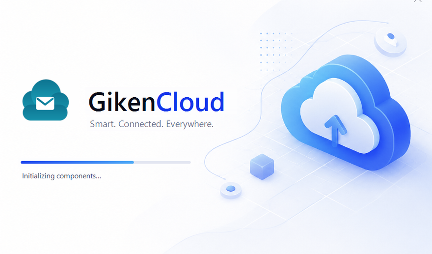
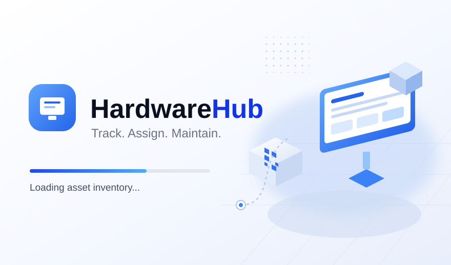
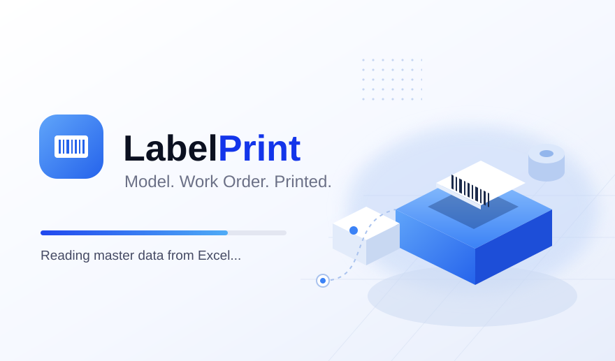
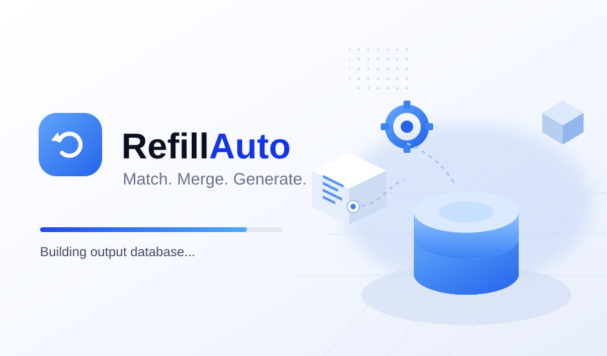

IT & Software Engineer with more than four years of experience in a manufacturing production environment — combining internal application development, network and server infrastructure management, and hands-on incident handling on the production floor.
Since May 2022 I've been IT & Software Engineer Staff at PT Giken Precision Indonesia, accustomed to owning the full development cycle from requirements analysis through post-implementation support.
Beyond development I manage the infrastructure behind it — network configuration and monitoring, Microsoft Email administration, production servers and databases, and TSC label printing systems. Freelance IT & Software Engineer since 2024.
See What I've Built →Across application development, infrastructure, and hardware integration.
Four-plus years inside a manufacturing production environment, plus independent consulting.
Real tools running in a real factory — not tutorial clones.

01In ProductionNative Windows email client replacing Outlook company-wide — WinForms + WebView2 with a C# backend over 89 IPC channels, PST import, real-time chat, and a self-healing auto-updater.

02Web AppFull-stack IT asset management: inventory, categories & departments, QR-code labels, maintenance schedules, ribbon consumption tracking, and repair request workflow.

03Internal ToolPulls Model/WO/URL master data from Excel on the network share to generate correctly formatted TSC production labels, with automatic production week-code calculation.

04Internal ToolReconciles loading-list CSVs against Excel part lists to generate clean output databases for a production refill line, with a dedicated Bluetti format mode and async processing.
I'm open to discussing new projects and opportunities — internal tools, infrastructure, or something built from scratch.
Get In Touch →